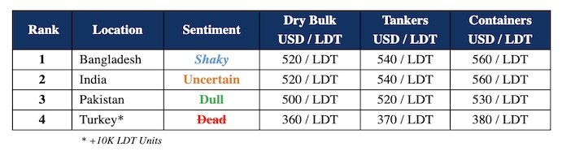

inWeekly Demolition Reports01/07/2024

… the Indian sub-continent ship recycling markets during the summer / monsoon months are the last placewe’d suggest you look for guidance during these current times given that vessel prices are already down by about USD 20 – USD 25 / LDT and will have further declined by the time we reach the first half of July (as previously forecasted in the GMS WEEKLY), as Ship Owners & Cash Buyers are now chasing down a declining market on the back of a Ship Recycling communion that is facing exacerbating economic challenges of their own. In that, not only are local steel plate prices in shambles, but currencies are also taking tumbles at key destinations and have unexpectedly delivered a monsoon retreat for industry players who are looking to conclude business at the various ship recycling destinations. In the interim, vessel availability is expected to coincidentally take a hit as Israeli strikes against Hezbollah Rebels in the North and U.S. Forces engaging Houthi Rebels in the South / Red Sea lanes should create further delays for commercial traffic. Should these strikes continue unabated, freight rates are not only expected to hold / get firmer, but the strikes could squeeze supply even more and potentially push global inflation higher.
Meanwhile, as prices cool off post-election and until the announcement of India’s budget in late July, the Indian economy is expected to remain suspended in confusion not knowing what sort of infrastructure projects will make it off the drawing board, thereby resulting in sentiments and offers from India being overly cautious of late, as Alang buyers eagerly anticipate the Indian budget in order to formulate some sort of direction that the market could move for the remainder of the year and even in the years ahead. Bangladesh also remains reticent as nothing other a couple of small LDT units have arrived locally and vessel prices have dropped due to a hike in fuel duties – all of which are working against the local industry. Notwithstanding, the one bright spot for the week saw something of a renaissance for the beleaguered Pakistani market as news of a couple of private sales emerged this week. Although Gadani is not quite be on the same competitive level as Alang or even Chattogram, but for certain geographically positioned vessels looking for lower delivery costs and with certain crew nationalities on board seems to make more sense for such units to head to Gadani shores and contend with no beaching tides. Lastly, Turkey on the far end iszzz.
Overall, there remains a paucity of viable candidates for end buyers in each market to acquire and as such, this summer really is an opportunity for sub-continent recyclers to digest the BOBs that have been delivered over recent weeks, and even offer above market levels to fill dormant plots at an operational loss, should the need arise.
For week 26 of 2024, GMS demo rankings / pricing for the week are as below.

📄 Download PDF: Ship-recycling-market-insight-Week-26-6-28-2024-When-you-Dont-Know.pdfSource: GMS,Inc.https://www.gmsinc.net/gms_new/index.php/web